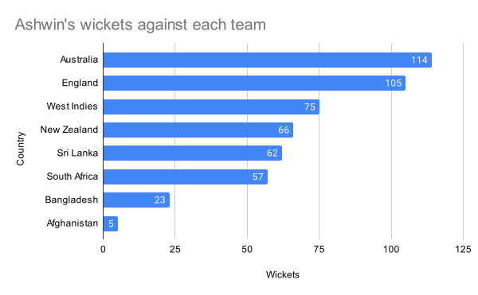
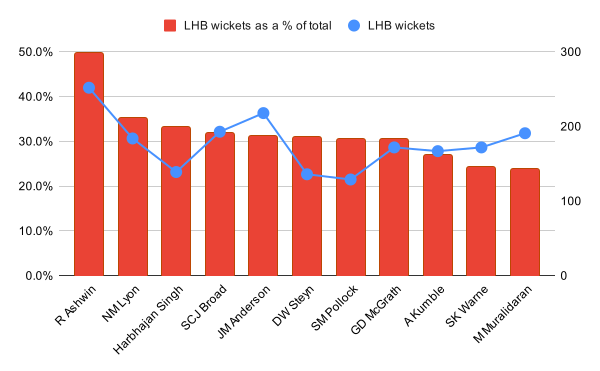
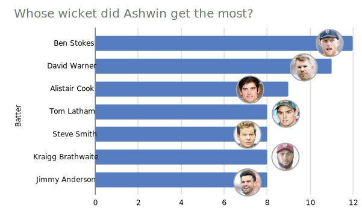

Where does R Ashwin, India's spin lynchpin, stand among the bowling pantheon as he embarks upon his 100th Test. A data-driven look
March 5, 2024, 4 a.m | Updated 5:27 a.m. IST - New Delhi, Mumbai, Bengaluru

India's spin bowling lynchpin is at a stage of his career where he is creating a record/major milestone in every Test match he is playing. Earlier this month, R Ashwin captured his 500th wicket in the 3rd Test of the India-England Test series becoming the second Indian and just the ninth bowler to achieve that mark.
In the first week of March 2024, Ashwin would be playing in his 100th Test match. He will be only the 14th cricketer, among 313 Indian Test players ever, to play in 100 Tests.
Ashwin's record in Tests in phenomenal. His 507 wickets in 99 matches were achieved at an average of 23.91 and a fabulous strike rate of 51.3. Here's a breakup of the 507 wickets by opponent teams
The bulk of the 507 wickets - 354 of them to be precise - were achieved in India, the highest for any Indian bowler. The next best are Anil Kumble (350), Harbhajan Singh (265) and Kapil Dev (219). Here's a look at the average and strike rate for Ashwin venue-wise. While he has a great record in India, Sri Lanka, Bangladesh and West Indies, his average (39.4) and strike (83.7) in the pace-friendly SENA (South Africa, England, New Zealand and Australia) countries pale in comparison to other venues.
| Venue | Matches | Wkts | Best figures (Innings) | Best figures (Match) | Average | Strike Rate | 5fers | 10fers |
|---|---|---|---|---|---|---|---|---|
| in India | 59 | 354 | 7/59 | 13/140 | 21.3 | 46.6 | 27 | 6 |
| in SENA* | 25 | 71 | 4/55 | 7/121 | 39.4 | 83.7 | 0 | 0 |
| in West Indies | 6 | 32 | 7/71 | 12/131 | 19.3 | 41.4 | 4 | 1 |
| in Sri Lanka | 6 | 38 | 6/46 | 10/160 | 21.6 | 41.1 | 3 | 1 |
| in Bangladesh | 3 | 12 | 5/87 | 6/137 | 28.4 | 55.9 | 1 | 0 |
Yet another telling statistic for Ashwin's wickets is that nearly half of them are of left handed batsmen (LHB). Ashwin has been lethal against southpaws, picking 252 (the highest for any bowler) of them in his total tally of 507. The % of LHB that Ashwin has picked up - 49.7% is also the highest. See the chart for bowlers with more than 400 wickets to find out their LHB% and total number of wickets against LHBs
It is no wonder that current England captain Ben Stokes (12 dismissals), Australia's David Warner (11), England's Alistair Cook (9) and New Zealand's Tom Latham (8) are the batters whose wickets Ashwin has picked the most. All of them are left-handed. More importantly, among the 15 batters who got out to Ashwin's bowling the most, only three - England's Jimmy Anderson, Australia's Nathan Lyon and South Africa's Morne Morkel bat in the lower order, an indication of India's spin maestro's prowess.
Where does Ashwin's records stand in the pantheon of best bowlers in the world. Only 197 bowlers have picked 100 wickets for more in Test cricket, overall. Strike Rates (balls taken to pick up a wicket) are very useful in comparing bowlers. Lower the strike rate, more lethal the bowler. We plot a graph for those bowlers' wickets against their Strike Rate (reversed). The dashed line indicates the medians for both axis.
You can select the type of bowler you want from the dropdown below. Note how the median strike rate and wickets change for pace bowlers and spinners. Mouse over the dots in the scatterplot to check the strike rates and wickets for all bowlers who picked up 100 or more wickets in Test cricket. Spinners are marked in blue (except Ashwin, who is marked in black, and pacers are marked in red.